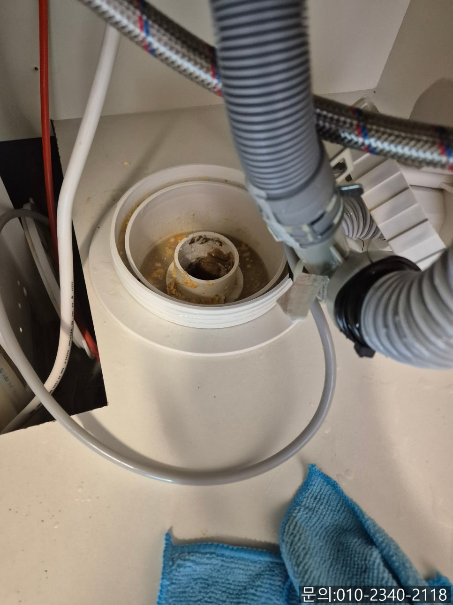
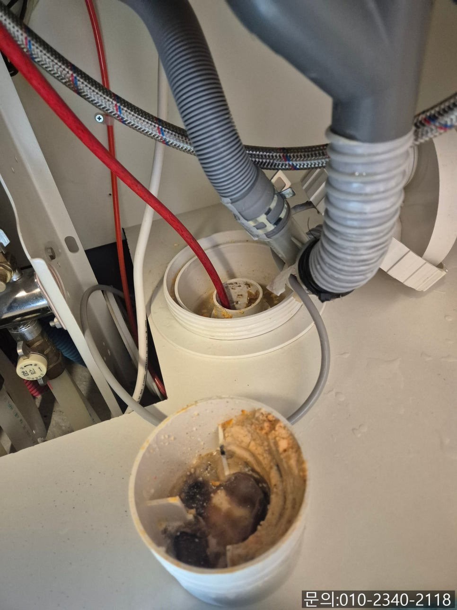
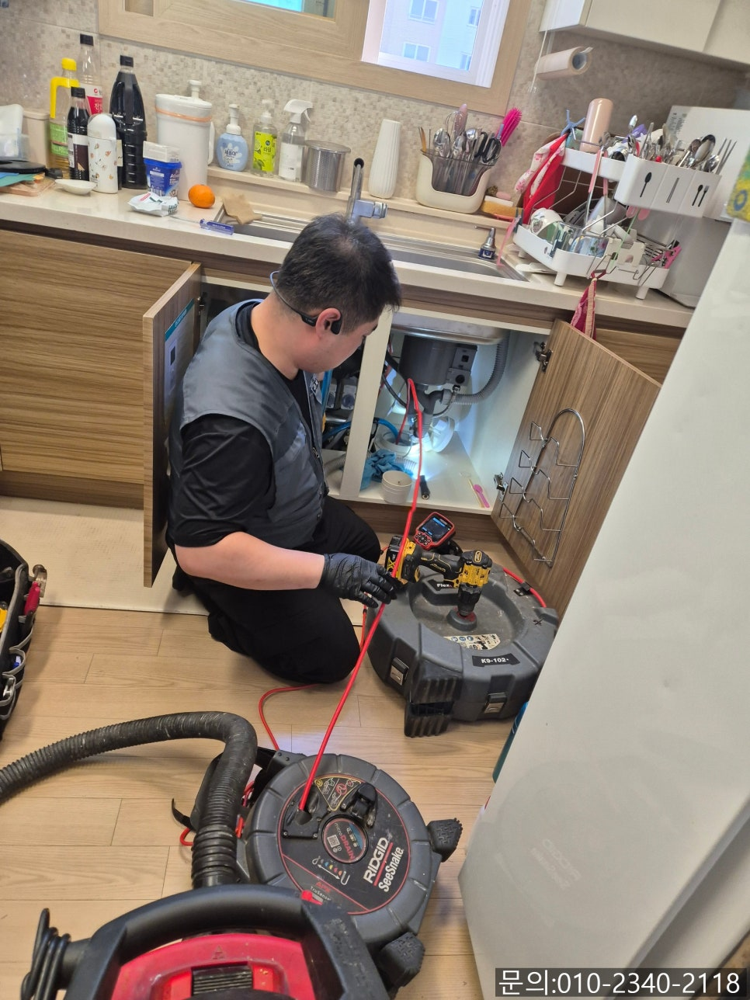
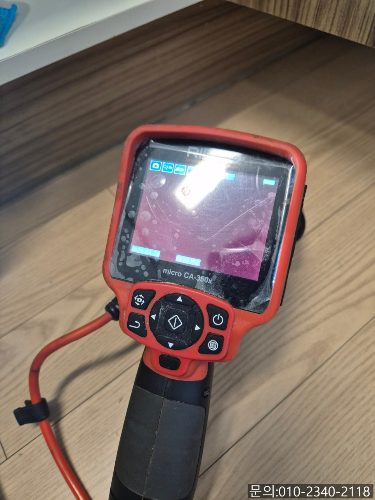
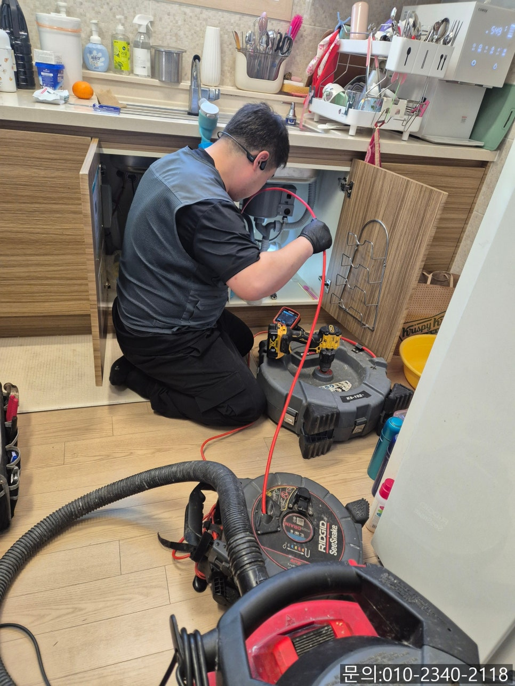
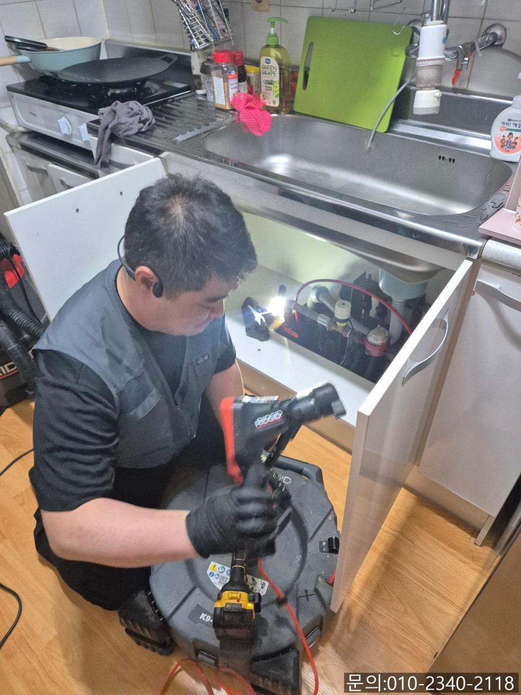

🏠 백사면 싱크대 막힘 이천 호법면 빌라 하수구 물 넘침 뚫는 비용
용인 싱크대막힘 전문 시공 후기

📋 작업 개요
- 위치: 용인
- 서비스 유형: 싱크대막힘, 하수구막힘, 배관막힘, 역류해결, 뚫는업체, 배관청소
- 작업 일시: 2025. 5. 13. 17:48
- 업체명: 하수구수사대 (010-5615-2118)
🔍 문제 상황
안녕하세요.
백사면 싱크대 막힘, 이천 호법면 빌라 하수구 물 넘침 뚫는 비용에 대해 소개해 드릴 하수구 다큐입니다.
뚫어도 계속 반복되는 하수구 막힘이 고민이신가요?
백사면 싱크대 막힘 포스팅을 참고해 주세요!
백사면 싱크대 막힘이 발생하는 이유는 다양하겠지만, 큰 틀을 살펴보면 물이 흘러가야 하는 하수관이나 배관 내부에 물이 아닌 다른 이물질들이 오랜 시간 쌓이면서 나타나는 경우가 많습니다.
즉, 이미 백사면 싱크대 막힘이 발생했거나, 하수구에서 역류하는 현상이 확인된다면 배관 내부에 쌓인 이물질로 인해 정상적인 기능을 하지 못하는 상태일 거예요.

🔎 원인 분석
💡 전문가 진단: 정밀 진단 장비를 사용하여 슬러지의 고착 여부를 판명하고 타격/세척 작업을 실시했습니다.
오늘은 백사면 싱크대 막힘으로 의뢰를 받고 다녀온 현장을 직접 찍은 사진과 함께 소개해 드릴게요.
하수구 다큐의 경우 고객님께 하수구 막힘으로 연락을 받으면 전화로 상황 설명을 듣고 직접 현장에 방문해 드리고 있습니다.
대부분 고객님들께서 전화로 가장 궁금해하시는 부분이 비용 문제인데요.
현장 상황에 따라 사용하는 장비, 뚫는 방법, 발생되는 비용이 모두 달라 정확한 금액을 말씀드릴 수 없다 보니, 직접 방문해서 막힘의 원인을 파악하고 현장에 맞는 정확한 비용을 안내해 드리고 있습니다.
이천 호법면 빌라 하수구 물 넘침 현장 역시 고객님께서 전화로 비용을 가장 먼저 물어보셨는데요.
정확한 금액을 안내해 드리기 어려운 부분에 대해 설명해 드리고, 직접 방문해 무료로 견적을 봐드린다고 말씀드린 다음 필요한 장비를 챙겨 현장으로 달려갔습니다.

🔧 작업 과정
이천 호법면 빌라 하수구 물 넘침 뚫는 비용을 안내해 드리기 위해 우선 내시경 카메라를 이용해 막힘의 원인을 파악해 보기로 했어요.
사람의 몸속 장기도 확인해 보기 위해 내시경을 넣어 검사하는 것처럼 하수구 배관 역시 사람의 눈으로 직접 확인할 수 없다 보니 내시경 카메라를 진입시켜 막힘의 원인을 파악해야 합니다.
내시경 카메라가 배관 내부로 들어가자 화면이 불게만 보였어요.
배관 내부에 기름 슬러지가 가득 차 있는 상태이다 보니 조명에 비치면서 붉게만 보이는 거예요.
고객님께 이천 호법면 빌라 하수구 물 넘침의 원인과 뚫는 비용, 작업 방법에 대해 안내해 드린 다음 작업을 진행하기로 했어요.
이번 현장의 경우 싱크대 배관 내부에 이물질이 워낙 많이 쌓여있다 보니 석션으로 일부 제거해 준 다음 플렉스 샤프트로 작업하기로 했습니다.
플렉스 샤프트 장비는 노즐 끝에 달려있는 체인이 배관 내부에서 360도로 빠르게 회전하면서 붙어 있는 이물질을 떨어트리고 잘게 부서 주는 작업을 하게 됩니다.
오랜 시간 쌓인 이물질의 양이 워낙에 많다 보니 내시경 카메라로 꼼꼼하게 확인하며 반복해서 작업을 이어갔어요.
카메라로 기름 슬러지의 위치를 파악하고 플렉스 샤프트로 이물질을 잘게 부서진 다음 석션을 사용해 빨아드려 배관 내부에서 완전하게 제거하는 작업을 진행해 드렸습니다.
한참을 반복해서 작업하자 모든 기름 슬러지가 제거되고 깨끗해진 배관 내부를 확인할 수 있었습니다.


✅ 작업 완료
모든 과정을 지켜보시던 고객님께서도 눈에 보이지 않는 배관을 청소하는 비용이 많이 비쌀까 봐 걱정했는데 저렴한 비용으로 새것처럼 깨끗해졌다고, 진작 배관 청소할걸 괜히 고민하셨다고 말씀해 주셔서 뿌듯했던 현장이에요.
혹시 비용이 걱정되 하수구 배관 청소를 못하고 계신가요?
하수구 다큐와 함께 해결해보세요!




⚠️ 주방 싱크대 배관 막힘 예방 수칙
- ✅ 기름기가 묻은 식기나 프라이팬은 설거지 전 키친타올로 반드시 기름때를 닦아내세요.
- ✅ 주기적으로 싱크대 개수대에 뜨거운 물을 가득 받아 한 번에 내려 배관 내부 기름을 씻어내세요.
- ✅ 배수구 거름망을 미세한 필터로 사용하시고 음식물 찌꺼기가 틈으로 새어 들지 않게 관리하세요.
- ✅ 베이킹소다와 식초를 뜨거운 물과 함께 일주일에 한 번씩 부어주면 배관 살균과 막힘 예방에 좋습니다.
💡 핵심 정리
- 확실한 장비 작업(내시경 점검 및 샤프트 스케일링)으로 원인을 뿌리 뽑습니다.
- 작업 후 1년 이내에 동일한 부위 재발 시 100% 무상 A/S 서비스를 보장합니다.
- 서울 · 경기 · 인천 전 지역에 24시간 언제든 긴급 출동할 수 있도록 항시 대기 중입니다.
❓ 자주 묻는 질문 (FAQ)
🚨 용인 싱크대막힘 문제로 고민이신가요?
정확한 원인 진단과 확실한 시공으로 재발 없는 해결을 약속드립니다.
24시간 긴급 출동 | 서울 · 경기 · 인천 전지역 | 1년 내 재발 시 무상 A/S